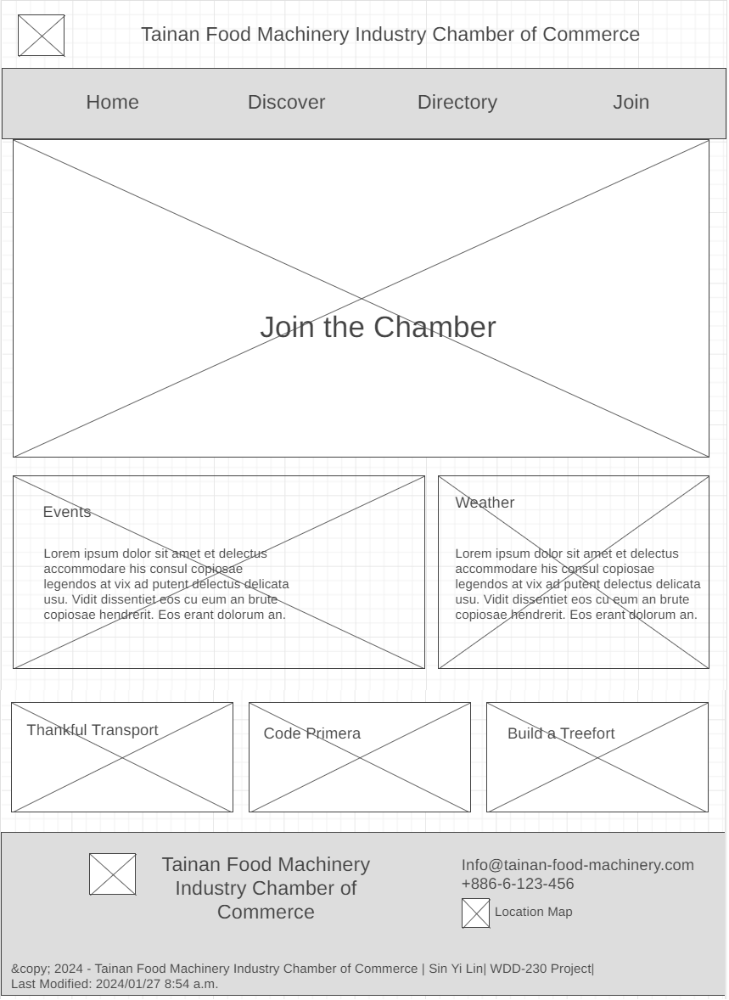

Site Name
Tainan Food Machinery Industry Chamber of Commerce
Site Purpose:
This chamber assists members in marketing, implements government upgrading policies, promotes product improvement among peers, facilitates mutual assistance and cooperation, and strategizes alliances to enter international markets. It also issues bidding certificates for member factories and assists members in participating in government and related agencies' procurement bidding.
Scenarios:
- What events are scheduled for this year that promote business-to-business networking?
- Where can I find contact information for the chamber's board of directors?
- Can I access industry reports or updates on the food and pharmaceutical machinery sector through the chamber's website?
Color Schema
Palette URL:
https://coolors.co/b7e6d0-3c0211-1f4736-e7efe7-feeced| Primary | Secondary | Accent 1 | Accent 2 |
|---|---|---|---|
| #1F4736 | #E7EFE7 | #3C0211 | #FEECED |
Typography
Typography URL:
@import url('https://fonts.googleapis.com/css2?family=Lato:wght@300 &family=Montserrat:wght@200&family=Open+Sans:wght@300&display=swap');
| Section | Heading | Paragraph |
|---|---|---|
| Font | "Montserrat", "Lato", Helvetica | "Open Sans", Helvetica, sans-serif |
Wireframes
Home
